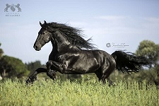
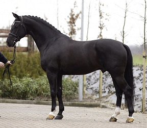

El caballo Marwari es una raza de caballo de la región histórica de Marwar (India). Son caballos de aspecto parecido al caballo árabe, muy valientes y tradicionalmente usados como caballos de guerra. Tienen las orejas curvadas hacia dentro y se presentan en todos los pelajes.
Historia
Los Marwari son nativos de India ,específicamente de la region de Marwar. También se cree que pueden tener una antigua ascendencia de caballos árabes y caballos de mongolia. Uno de los ejemplares más famosos de la raza fue Chetak o Cetak, el estalón "azul", que salvó la vida a su dueño en una batalla. En 1999 el gobierno de India prohibió la exportación de cualquier raza nativa de la india , debido a que cada vez había menos ejemplares puros tanto de Marwaris como Kathiawaris. La mayoria eran cruces pobres entre Árabes o entre Marwaris y Kathiawaris y dado a esto la raza estuvo al borde de la extinción. Actualmente se han importado 21 caballos de esta raza ya que hasta el 2006 el gobierno de India permitía su exportación bajo licencia. Hoy en día se encuentran muy pocos ejemplares fuera del pais , solo unos pocos estan en Francia y España y los descendientes de los 21 caballos exportados se encuentran en Estados Unidos.
Características
Su perfil es recto. Sus orejas son largas y giradas hacia adentro, con las puntas en contacto. Tiene un cuello alargado y su pecho es ancho, con los hombros bastantes rectos. Las extremidades son delgadas. Esta raza de caballos soporta temperaturas altas, frío, y condiciones climáticas adversas. Son conocidos por su elegancia, belleza, vigor, resistencia e inteligencia; es atento, de paso despierto, y de peculiares orejas, que se tocan en las puntas cuando rotan 180º. Es capaz de cubrir largas distancias a buen ritmo gracias a sus fuertes extremidades y cascos.
• Cabeza: larga y refinada, con una longitud de la cara de unos 56 cm. y 21 cm. de ancha, generalmente plana aunque también se ha observado algunos animales con la frente convexa. La frente está bien emplazada entre los ojos, con el hocico de tamaño mediano y suave y la mandíbula prominente pero bien conformada.
• Orejas: son de tamaño medio, con una longitud de unos 13 cm. de la base a las puntas y unos 8 cm. de ancho. En las yeguas tanto como la longitud como anchura de las orejas son mayores que la de los caballos. Las puntas de las orejas se tocan cuando rotan 180º.
• Ojos y ollares: los ojos son grandes y redondeados, situados bastante separados. Los ollares son grandes y redondeados de forma acampanada, y muy sensibles.
• Espalda y cuello: las espaldas son musculosas, largas y amplias. El cuello es fino hacia la nuca, pero más amplio cerca de la espalda, con una base bien musculosa.
• Dorso, cruz y altura a la cruz: el dorso es mediano y fuerte, la cruz bien definida. Los caballos miden entre 152-165 cm. y las yeguas entre 150-165 cm. a la cruz.
• Longitud: la longitud del cuerpo del caballo Marwari es media, de promedio 147,04 + 0,91 cm.
• La cola: la cola está bien situada y la mantiene alta.
• Peso: el peso medio del caballo Marwari es 371.57+ 10,77 kg. Los caballos generalmente son más pesados que las yeguas.
• Capas: se observan gran diversidad de capas en el caballo Marwari. Los colores más comunes son el castaño oscuro (Bhanwar), el bayo (Kumet), bayo oscuro (Telia Kumet), pío negro (Kala Ablak), pío castaño (Lal Ablak), alazán (Surang), pardo(Champa), ruano (Sanjab), tordo (Swet), tordo picazo (Kagra).
En la actualidad
Los usos que se le atribuyen a la principalmente al hecho de ser caballo de silla, es decir, un caballo de postureo y de elegancia, utilizado en diferentes eventos como símbolo de victoria característica de la región asiática, por lo que se convierte en una especie de emblema o reliquia viviente, pudiendo servir en diferentes exhibiciones en donde se le aplaude por su grandeza y papel en la historia, pero también por su figura prominente, atlética y resistente.
La capacidad de aprendizaje del caballo Marwari se ha convertido la razón ideal para que diferentes personas de todo el mundo lo consideren una raza llena de rareza y de aptitudes importantes para ser criado y coleccionado, hecho para la doma clásica.
Uno de sus usos más particulares ha sido el ser incluido en el deporte del polo, su extensión hacia Europa y las influencias del Reino Unido tanto en india como en Arabia, le convirtieron en un candidato ideal para ser usado en las prácticas de polo sobre césped, sus características potentes le dan un buen desempeño sobre otros tipos de caballos, resistiendo con mayor facilidad los partidos de este deporte, además de que su contextura ligera y rápida le hace ganar con mucha mayor ventaja tanto en velocidad como en agilidad en distancias cortas.

|

|

|

|

|

|

|

|